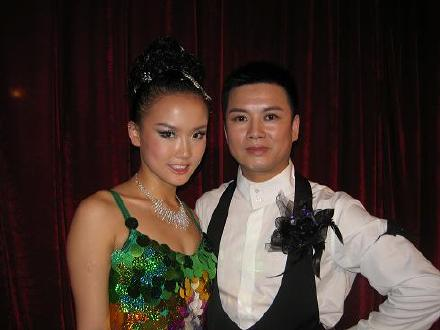
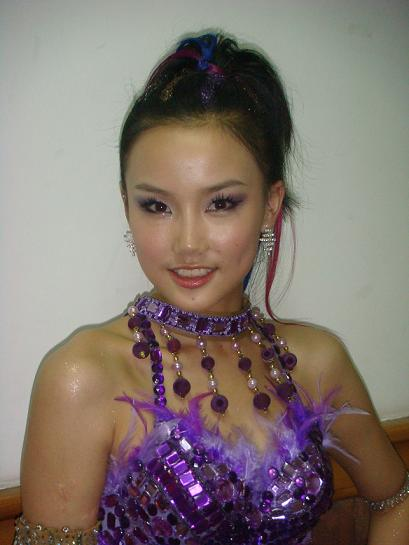
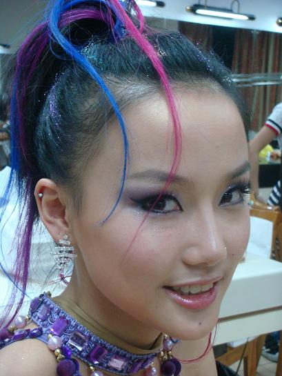
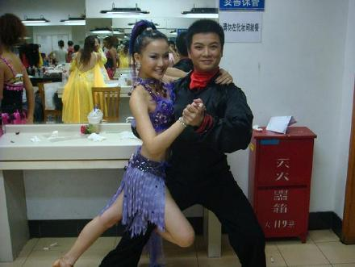

小的时候靠在外婆身边看他的戏,觉得怪怪的,为什么可以那样唱歌,只知道他是外婆的最爱...
长大了还是陪着外婆看他的戏,觉得挺好听的,有点像很慢的R&B,知道他是外婆的最爱...
现在舞林大会让我认识了外婆的最爱,外婆的最爱成为了我的竞争对手,我们要争夺舞王...
决赛那天,外婆很想去现场看一眼她的最爱,但已经80的外婆已经去不动了...
为了我的最爱的外婆,我不得不把舞王"让"给了他,哈哈哈...
王子就是王子
宝哥哥和龄妹妹,这是半决赛的后台,那次我拿了第一,外婆的最爱败给了我,啊哈哈哈哈

决赛,让外婆的最爱拿第一,好女不跟男斗
外婆的最爱给我照的像

外婆的最爱给我照的像

切磋舞艺
